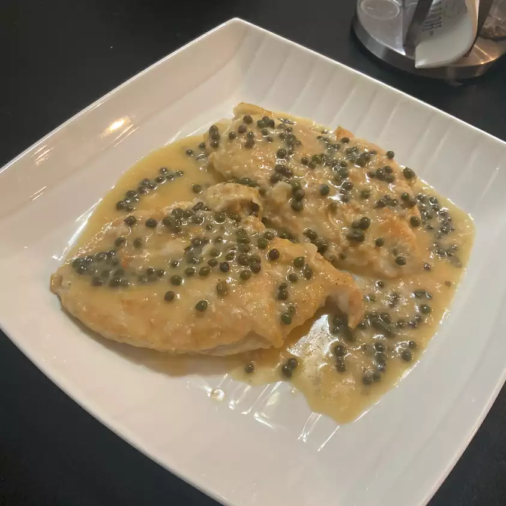

!DOCTYPE html>
Lemony Chicken
Lemony Chicken

This delicious recipe is a must try! Whether your cooking
for two, or cooking for the fam. This Lemony Chicken is perfect
in every scenario. A quick and easy one to!
Cook: 30 Mins
Total: 40 Mins
Prep: 10 Mins
Servings: 4
Yield: 4 Servings
Ingredients
- ¼ cup olive oil
- ½ cup all-purpose flour, or more if needed
- 4 skinless, boneless chicken breast halves
- salt to taste
- ¼ cup white wine
- 2 large lemon, juiced
- ¼ cup unsalted butter, softened
- ¼ cup drained capers
- 1 large lemon, cut into wedges
Steps
Step 1
Heat the olive oil in a large skillet over medium-high heat. Place the flour in a shallow bowl.
Season the chicken breasts with salt, then gently press into the flour to coat; shake off the excess flour.
Arrange the chicken in the skillet. Cook until golden brown, 7 to 10 minutes on each side.
Add the white wine and lemon juice. Continue cooking until the chicken breasts are no longer pink in
the center and the cooking liquid is reduced by half, 5 to 7 minutes more. Transfer the chicken to a plate.
Step 2
Remove the skillet from heat, and stir butter into the sauce until melted.
Pour sauce over the chicken breasts, and garnish with capers and lemon wedges.